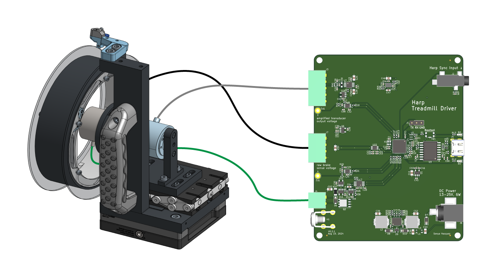

A Harp Device for controlling an instrumented variable-friction mouse treadmill

Note
This repository contains design files for the electronics assembly. For the mechanical assembly, design files, and bill-of-materials, see the OnShape project.
Features
- linear (no switching!) current control of 12V magnetic brake, Placid Industries B5ZD, datasheet.
- reads measurements from an RTS-10 torque transducer
- wheatstone bridge input for torque transducer
- quadrature encoder input for position/speed measurements
- Harp-protocol compliant over full-speed USB
- accepts Harp time synchronization input.
- reverse-polarity protected power supply.
Register Map
Credits
This board design was created in partnership with the team at Second Order Effects.
| Treadmill | |
|---|---|
| whoAmI | 1402 |
| firmwareVersion | 0.0 |
| hardwareTargets | 0.0 |
Registers
| name | address | type | length | access | description | range | interfaceType |
|---|---|---|---|---|---|---|---|
| Encoder | 32 | S32 | Read | Contains the current accumulated number of ticks. | |||
| Torque | 33 | S16 | Read | Contains the current torque value. | |||
| TorqueLoadCurrent | 34 | S16 | Read | Contains the current output current applied to the variable torque load. | |||
| SensorData | 35 | S32 | 3 | Event | Emits a periodic event containing the packaged treadmill data. [Encoder, Torque, TorqueLoadCurrent] | SensorDataPayload | |
| SensorDataDispatchRate | 36 | U16 | Write | Value greater than 0 will enable the periodic dispatch of treadmill data events at the specified rate (sp/s). | [0:1000] | ||
| BrakeCurrentSetPoint | 37 | U16 | Write | Sets the raw value of the torque set-point to be applied to the treadmill. This value is cleared to 0 if torque_limiting is enabled and triggered. Further writes in this condition return a WRITE_ERROR. | [0:65535] | ||
| TareSensors | 38 | U8 | Write | Tares the specified sensors. | Sensors | ||
| ResetTareSensors | 39 | U8 | Write | Removes the tare from the specified sensors. | Sensors | ||
| EnableTorqueLimit | 40 | U8 | Write | Enables(1)/Disables(0) the brake if the maximum torque sensor value is detected. This register will be enabled by default. | EnableFlag | ||
| TorqueLimitState | 41 | U8 | Event, Write | A value greater than 1 indicates that the torque limit has been triggered and the brake setpoint will be cleared. Writing a value of 0 will clear the torque limit state and re-enable the brake. |